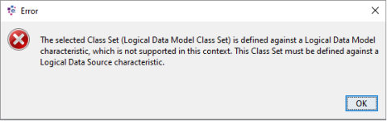
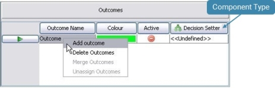
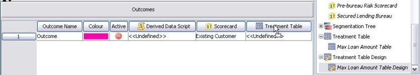
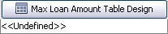

Decision Process Trees
A Decision Process Tree is a segmentation tree that has had a Decision Process Sequence assigned to it. It is the Decision Process Sequence that determines what processes will be executed at the leaf nodes of a Decision Process Tree.
Each process corresponds to a column to which various treatments and processes can be attached to the leaf nodes/outcome of the tree. The order of the columns in the tree corresponds to the order of the processes in the Decision Process Sequence. It is to the outcomes in these columns that the Decision setters, Derived Data Scripts, Index Tables, Scorecards, Treatments and Value setters (depending on the processes selected) are assigned, enabling multi processing to be performed at a single outcome.
The following illustrates this relationship:
A Decision Process Tree is built up in the same way as segmentation trees using tree splits. Tree splits contain the information used to group those records which are to be treated in the same way and as a result, in a Decision Process Tree, have the same components assigned to it when executed.
| A Decision Process Tree is created based on a Decision Process Sequence. If multiple Decision Process Trees are created from the same Decision Process Sequence, then the result mappings defined on the Decision Process Sequence will be overwritten, and only hold the results of the last executed Decision Process Tree. To avoid this, it is recommended that only one Decision Process Tree is created from each Decision Process Sequence when result mappings are defined on the Decision Process Sequence. |
A Decision Process Tree can be created from the Explorer window.
| You will only be able to add a component type that has been allowed for the selected folder. If it is not allowed it will not be listed and therefore cannot be created. See the Manage allowed component types help page for more information on this. |
To create a Decision Process Tree using Add component
- From the Explorer window right click at the required folder level and select Add component.
- Select Decision Process Tree.
- In the Create component dialog enter the name of the Decision Process Tree.
- Select the Open new components in component editor check box.
- Click on the OK button.
You can now right click on the decision process tree and select Open. The Decision Process Tree Editor will open allowing you to Edit a tree.
The decision process tree name will be listed in the Explorer window under the selected folder level. The component is identified by the icon.
If you do not wish the editor to open, keep the check box de-selected. From the Explorer window right click on the decision process tree and select Open.
| To be able to use a Decision Process Tree that has been created using Add Component, the Decision Process Sequence need to be assigned to the tree. |
- With the Decision Process Tree editor open the Resources window selected, click on the Expand + button next to the Decision Process Sequence and drag and drop the decision process sequence you require onto the decision process tree editor.
The Decision Process Sequence you have selected will be assigned to the tree. Columns will be added to the tree that correspond directly to the processes created in the decision process sequence.You will now be able to assign individual components to each column for each leaf node of the tree.
A tree consists of:
- tree splits that form the graphical representation of the segmentation rules which together form the tree. Tree splits contain the information used to group those records which are to be treated in the same way.
- leaf nodes, the end points of the tree.
- outcomes, which are used to describe the expected treatment, actions, values and classification that will be applied to each record falling into a given outcome.
- attachment, the component that will be processed when a record falls into a given leaf node.
An outcome can be associated with one or more leaf nodes so the same outcome and associated component can be applied to multiple leaf nodes.
To edit a tree
|
Class Sets, Matrices and Index Tables that have been defined against Logical Data Models can only be used in scripting components. If any are used in a Decision Process Tree, an error message similar to the following will be displayed:  |
The Decision Process Tree editor enables the user to create a tree using tree splits to define segmentation levels (leaf nodes) to which various components can be applied depending on the decision process sequence that has been used.
When a Decision Process Tree has been created the decision process sequence will need to be assigned to the Tree in order that all the components can be assigned to the outcomes of the tree.
To assign a decision process sequence to the decision process tree
- With the Decision Process Tree editor open and the Resources window selected, click on the Expand + button next to the Decision Process Sequence.
- Drag and drop the decision process sequence you require onto the Decision Process Tree editor.
The Decision Process Sequence you have selected will be assigned to the tree. Columns will be added to the tree that correspond directly to the processes created in the decision process sequence. You will now be able to assign individual components to each column for each leaf nodes of the tree.
Segmentation components or segmentation rules can be added to any of the leaf nodes of the tree to form tree splits. Components added from the Resources window are referenced by the tree and other components that use them.
To add a referenced component to a leaf node
- With the Tree editor open click on the Resources window. The valid component types will be listed.
- Expand the component type list to display all the available components of that type. For example:

- Drag and drop the required component onto the leaf node you require.

- The new tree split will be added to the tree. The new tree split will provide alternate pathways for records that satisfy the criteria defined in this new segmentation rule.
- Repeat steps 2 and 3 until all the rules you require have been added to the tree.


You can now go on to define leaf node names and outcomes to your tree.
or
Components can be referenced from within the tree (this means that they can be changed from outside of the tree and may be shared by other components). Alternatively, a component can be created from within the Tree editor and will be embedded into the tree. This means the component details are only used by this tree and can only be edited from within the tree.
| Only Class Set, Matrix, Boolean Expression and Segmentation Tree are supported for this version. |
To add an embedded tree component onto a leaf node
- With the Tree editor open right click on a particular leaf node and select Insert Embedded. The Insert Embedded Component dialog is displayed.

- Overtype New Tree Element with a unique name (within the tree) for the component and then select the required component type.
- Click on the OK button to confirm the selection and close the dialog.
The system will open the editor for the component you have chosen. - You will now need to edit the embedded component. See the relevant topics within Class Set, Matrix, Boolean Expression and Segmentation Tree.
- Once you have finished editing the component click on the Close Internal Editor button.
The component will be added to the tree as a new split. The new tree split will provide alternate pathways for records that satisfy the criteria defined in this new segmentation rule. - Repeat steps 1 and 5 until all the embedded segmentation rules you require have been added to the tree.

You can now go on to define leaf node names and outcomes to your tree.
Segmentation components, such as Boolean Expressions, Class Sets, Matrices and Segmentation Trees can be referenced from within the tree (this means that they can be changed from outside of the tree and may be shared by other components). Alternatively these segmentation components can be created from within the Tree editor and will be embedded into the tree. This means the component details are only used by this tree and can only be edited from within the tree.
Should the user wish to change an embedded segmentation component to a referenced segmentation component or a referenced segmentation component to an embedded segmentation component, in the Tree editor there is a Convert option.
To convert a segmentation component
- Within the Tree editor open, on any of the tree splits, right click and select Convert.

The system will open the Convert Component dialog.
- Type the name you require in the Convert To box.
- Click on the OK button.
The system will convert the component.


| When you are converting an embedded component into a referenced component, the system will not allow you to use a name that already exists in the folder that is listed in the Reference component's folder path. Either change the name or click on the Change button and select a different folder. |
If you have converted an embedded component to a referenced component the new referenced component will appear in the Resources window and be available for use in other components. If you have converted a referenced component, the referenced component will still exist in the Resources window, but a new embedded component will exist in the editor.
In order for a tree to be deployed all the leaf nodes must have an outcome assigned to them. An outcome contains a description of the action/treatment that is to be carried out at the leaf node, a colour and a component. It is the component that is assigned to the outcome that will be processed at runtime if a record falls down a particular leaf node.
To assign a component to an outcome
- With the Tree editor open click on the Resources window. The valid component types for the component tree you have opened will be listed
- Expand the component type list to display all the available components of that type. For example:

- Drag and drop the required component onto the outcome you require.

- The component will be added to the outcome. It will be this component that will be processed at runtime if a record falls down the leaf node to which this outcome has been assigned.
- Repeat steps 2 and 4 until all the outcomes you require have had components assigned.


| If you wish to open the editor for the component you have assigned to your outcome in the Outcomes table, select the outcome, then double click or right click and select Open. The editor for this component will be opened in another window. |
You can now go on to assign outcomes to your tree.
Outcomes are assigned to the leaf nodes of a tree. Leaf nodes assigned the same outcome will have the same action/treatment applied to them.
To create an outcome for a tree
- With the Tree editor open, right click in the Outcomes area and select Add Outcome.

An outcome will be created with a new colour and a default name. - Replace the default name with a new unique name for the outcome.
- Double click on the outcome colour to change an outcome colour (if desired) and select a new colour from the Pick a Colour screen.
- Repeat for all the outcomes required.
You will now have the outcomes you require for the tree.
In order for a treatment to be assigned to an outcome, a specific treatment table design needs to be assigned to the treatment column in the Outcomes area.
To assign a treatment table design to an outcome
- With the Decision Process Tree editor open click on the Resources window.
- Click on the Expand + button next to Treatment Table Design to display the treatment tables designs.
- Drag and drop the treatment table design onto the column name of the Treatment Table column.

The name of the Treatment Table Design will be assigned to the Treatment Table Column.
- Should you assign the wrong treatment table design to the Treatment Table column, right click on the column heading and select Clear Attachment.
You can now go on to assign a treatment to an outcome.
Once a treatment table design has been assigned to the treatment column in the Outcomes area a treatment table needs to be assigned to the outcome.
To assign a Treatment to an outcome
- With the Decision Process Tree open, in the Resources window click on the Expand + button next to Treatment Tables to display the treatment tables.
- Drag and drop the treatment table onto the outcome you require.
- Click on the OK button to close the message dialog and repeat step 2 to select an appropriate treatment table.
The system will open the Select Treatment dialog. - In the Search field
 type the word or part of a word that makes up the name of the treatment you require.
type the word or part of a word that makes up the name of the treatment you require.
The Select Treatment dialog will focus in on a particular treatment or treatment tables that match this word. - Select the treatment you require.
- Click on the OK button.
The Select Treatment dialog closes and the treatment you have selected is added to the outcome. - Repeat steps 1 and 6 until all the outcomes you require have had treatments assigned.
- From the Select Treatment dialog you can select a number of treatments.
- Select all the treatments you require using your Ctrl key and your Shift key on your keyboard.
- Click on the OK button.
The Select Treatment dialog will close and all the treatments that you have selected will be assigned to the Outcomes area as individual outcomes.
| If the treatment table you have selected is not using the same Treatment Table design as the tree the system will display the following message. Selected treatment table is not compatible with the Treatment Tree. |

| If the Select Treatment dialog is displaying the treatments in a tree view the Treatment Tables will need to be fully expanded to see all the treatments that match the word(s). |
| Treatments can be assigned from different tables provided the treatments are based on the same Treatment Design. |
You can now go on to assign components to the other outcomes and then assign these outcomes to your tree.
When a Decision Process Sequence has had an Assigned Value process assigned to it, an Assigned Value column will be created in the Decision Process Tree. When the Decision Process Tree is executed, the associated value or value characteristic that has been assigned to this Assigned Value in the Output column in the outcome area for a specific leaf node will be returned to the result characteristic.
To assign an output characteristic to the Assigned Value Output column
- With the Decision Process Tree editor open and in the Select Characteristic area, locate the logical data source you require.
- Click on the Expand + button to list all the characteristics contained in the logical data source.
- Select the characteristic you require.
- Drag and drop the characteristic onto the header of the output column in the Outcomes area.
The name of the characteristic will replace Output as the label of the output column.
Type a value, assign a value characteristic or configure the outcome to Do Nothing to fully configure the outcomes in the Decision Process Tree.
In order for a tree to be deployed all the leaf nodes must have an outcome assigned to them. An outcome contains a description of the action/treatment that is to be carried out at the leaf node, a colour and a component. It is the component that is assigned to the outcome that will be processed at runtime if a record falls down a particular leaf node. An outcome can be assigned to one or more leaf nodes. Leaf nodes assigned the same outcome will have the same action/treatment applied to them. In a segmentation tree you can have unassigned outcomes. In the outcomes area these are displayed with the following icon: .
.
The user can determine how the outcomes are displayed in the tree by right clicking on an outcome in the tree and selecting Outcome Display followed by Text, Colour or Mixed.
| Text - will display only the names of the outcome assigned to the leaf node Colour - will display only the colour of the outcome assigned to the leaf node Mixed - will display both the colour of the cell and the outcome name assigned to it |
To assign an outcome to a leaf node
- With the Tree editor open and in the Outcomes area, click on the outcome you wish to assign.
The Assign outcome button on the tool bar will automatically become activated. - In the Tree editor click on the outcome of the leaf node that you wish to assign the outcome. The same outcome will be assigned to any leaf nodes you select until you select another outcome in the Outcomes area.
- Repeat as necessary to assign an outcome to all of the leaf nodes.
- Select how the colour and the text is to be displayed by right clicking on any outcome name in the Tree editor and selecting Outcome Display followed by Text, Colour or Mixed.
| You must already have created the outcome(s) and the leaf nodes to which they are to be assigned. |
Each outcome should now have an outcome assigned. Those leaf nodes that have not had an outcome assigned will have <<Unassigned>> displayed in the Outcome column, <<Undefined>> displayed in the component type column and the following blue question mark icon displayed on the leaf node itself.
Each leaf node of a Segmentation Tree should have a leaf node name. The leaf node name is a user defined description that identifies the action that will be applied to any record that is applied to this leaf node.
To define a leaf node name
- With the Tree editor open left click on the first <<Leaf Node Name>> that needs defining and type a description.
Repeat until all the leaf nodes that need to have a description given to them have been completed. Auto Generate that is access by right clicking underneath the Leaf Node Name column in the Tree editor enables the user to automatically generate leaf node names in a tree if required.
The tree will now be ready for use within other components.
A Draft Split is a split that is not based on any pre-defined characteristic or rule, it is simply an outline of a split that could be created using a boolean expression, class set, matrix or segmentation tree. Tree splits that are created using these referenced components or these embedded components rely on pre-defined characteristics existing in the logical data source. A draft split is created without the need for these characteristics to exist in your system.
To add a draft split to a leaf node
- With the Tree editor open either click on the Palette tab and drag and drop the draft split onto the root node or leaf node you require.
or right click on the leaf node/root node and select Insert Draft Split. - The system will automatically add a draft split to your tree that contains two leaf nodes.

- Repeat steps 1 and 2 until you have added all the draft splits you require.

You can now go on to define the name of split headers and leaf nodes and add additional leaf nodes and draft splits as required.
Once a draft split has been added to the tree there are a number of ways in which it can be edited.
To edit the draft tree split
A draft split is a split that is not based on any pre-defined characteristic or rule, it is simply an outline of a split that could be created using a boolean expression, class set or matrix. Tree splits that are created using these referenced components or these embedded components rely on pre-defined characteristics existing in the logical data source. A draft split is created without the need for these characteristics to exist in your system. Once a draft split has been added to the tree the user can easily add descriptions to both the split header and the leaf nodes.
To add a description to the draft split
- With the Tree editor open, select either a split header or a leaf node from within a draft split.

- Begin typing.
The system will instantly start adding the name you are typing to the split header or leaf node.
- When you have finished typing, press Enter to confirm the name.


Continue until all the split headers and leaf nodes contain the description you require.
or
Each leaf node of a segmentation tree should have a leaf node name. The leaf node name is a user defined description that identifies the action that will be applied to any record that falls into this leaf node.
To define a leaf node name
- With the Tree editor open left click on the first <<Leaf Node Name>> that needs defining and type a description.
Repeat until all the leaf nodes that need to have a description given to them have been completed.
A draft split is a split that is not based on any pre-defined characteristic or rule, it is simply an outline of a split that could be created using a boolean expression, class set or matrix. Tree splits that are created using these referenced components or these embedded components rely on pre-defined characteristics existing in the logical data source. A draft split is created without the need for these characteristics to exist in your system. Once a draft split has been added to the tree the user can easily add additional leaf nodes to the draft split.
To add additional leaf nodes to the draft split
- With the Tree editor open, select the split header where you wish the leaf nodes to be added and either right click and select Insert Draft Outcome, or press Enter on your keyboard.
An additional outcome will be created.
- To add an additional leaf node at a specific point, select the leaf node above the position that you wish the leaf node to be added, then either press Enter on your keyboard or right click and select Insert Draft Outcome.

The leaf node will be added below the leaf node you have selected.
A Draft Split is a split that is not based on any pre-defined characteristic or rule, it is simply an outline of a split that could be created using a boolean expression, class set, matrix or segmentation tree. Tree splits that are created using these referenced components or these embedded components rely on pre-defined characteristics existing in the logical data source. A draft split is created without the need for these characteristics to exist in your system. Additional draft splits can be added to the tree by the user at any point of the tree.
To add a draft split to an existing leaf node
- With the Tree editor open, select the leaf node where you wish the draft split to be added and either right click and select Insert Draft Split, or with the leaf node selected press the Insert key on your keyboard.


{kind=link}
{kind=link}
{kind=link}
{kind=link}
{kind=link}
{kind=link}
{kind=link}
{kind=link}
An additional draft split will be created in the tree.
You can now go on to define leaf node names and assign outcomes to the leaf nodes of the draft splits.
Once the user has successfully created a decision process tree component, the user will be able to test it using the Batch or Interactive Tester.
The user can test a decision process tree either by manually typing in data for the input characteristics referenced in the decision process tree or by performing a test against a known data source.
To perform an interactive test
To test a decision process tree manually by entering data into the relevant fields for the input characteristics, use the Interactive Tester.
To perform a batch test
To test a decision process tree using data from a .csv file, use the Batch Tester.
Validate checks the whole decision process tree to ensure that every component that the decision process tree references or uses is valid. Valid means the component is complete, it is of the correct format and any links to other components (where applicable) are valid and that the component is configured. If the decision process tree is invalid information will be provided in the Validation window.
To validate a decision process tree
- With the Decision Process Tree editor open click on the Validate icon
The system will check the validity of the tree and display in the Output window information on any areas of the decision process tree that contain validation issues.
Those lines that have an Error icon displayed next to them indicate that an error occurs that will need to be corrected before the decision process flow is valid. - Double click on the error in the Validation window and the component with the validation issue will open in the main editor.
- Amend the component as required.
- Save the component and then revalidate by clicking on the Validate icon once more.
The Validation window will display any issues that still exist. - Repeat steps 2 to 4 until no errors exist.
{kind=link}
{kind=link}
The Decision Process Tree will be ready for deployment.